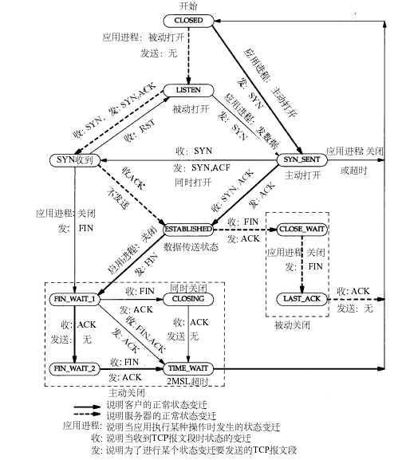

Java是解释执行还是编译运行？其实这个问题本身就是一个错误的问题，以现在jvm的发展来说，jvm在执行字节码时，本身就融合了解释和编译两种方式，部分代码由jvm解释执行，部分代码会由JIT一次性编译成机器指令直接运行。
泛型、反射原理
泛型擦除，反射实现动态创建对象。动态编译
Java IO
根据处理数据类型的不同分为：字符流、字节流。根据数据流向不同分为：输出流、输入流。常用的IO对象：
|
|
JVM：内存、GC、动态编译、类加载、字节码指令、工具
- 内存管理：直接内存、程序计数器、虚拟机栈、本地方法栈、堆、方法区、运行时常量池
- 内存模型：主内存、工作内存。
- GC算法：标记清除算法、复制算法、标记整理算法
- GC策略：Serial、ParNew、Paralle Scavenge、Serial Old、Paralle Old、CMS、G1
- 类加载过程：加载、验证、准备、解析、初始化、使用、卸载
- 类加载器：双亲委派模型、双亲委派模型逆向
- 字节码方法调用指令：invokestatic、invokespecial、invokevirtual、invokeinterface、invokedynamic。
- 调用分类：解析调用（Resolution）、分派调用（Dispatch）
- 类型分类：静态类型（Static Type）、实际类型（Actual Type）
- 常用工具：jps、jstat、jmap、jstack
哪些情况会引起OutOfMemoryError
在上面说的内存管理中，除了虚拟机栈和本地方法栈溢出时是StackOverflowError，其他内存区域的溢出都是OutOfMemoryError。
wait，sleep区别
- wait是Object的成员方法，sleep是Thread的静态方法
- wait会释放锁，而sleep会一直持有锁。
- 两者都可以让线程暂停一段时间，但本质的区别是，sleep是线程运行状态的控制，而wait是线程之间通信的问题。wait可以把一个线程挂起，直到超时或同一个对象调用notify或notifyAll方法唤醒。wait，notify，notifyAll方法都只能在同步控制方法或代码块中使用。
- sleep必须catch异常
Synchronized和ReentrantLock有什么区别，什么是偏向锁、自旋锁，什么是锁升级，膨胀，JUC中除了ReentrantLock外还有哪些锁？
- Synchronized是java关键字，语言层面的同步实现，Lock是一个锁的抽象类，把同步控制交由用户处理
- 当发生异常时Synchronized会自动释放锁。Lock必须手动在finally中释放锁。
- Synchronized无法判断当前锁的状态，Lock可以
- Synchronized可重入，不可中断，非公平。Lock可重入，可中断，可以自由选择是否公平锁。
volatile关键字
保证变量对所有线程的可见性。禁止指令重排序优化。由于java里的运算不是原子操作，所以volatile变量的运算在并发下依旧是不安全的。
jvm配置大内存时需要注意什么
JVM配置大内存的问题主要是FullGC发生的频率和时间的控制。越大的内存，触发FullGC时需要的时间越长。根据业务需求，如果注重吞吐量，忽略延时。那么可以将FullGC的阈值调大。如果延时敏感，则要控制好FullGC发生时的时间。
-XX:-UseCompressedOops参数作用
在64位JVM中采用32位的寻址方式，压缩指针，减少内存开销。实现方式是在机器码中植入压缩与解压指令，当对象被读取时，解压，存入heap时，压缩。
ThreadPoolExecutor的线程池工作方式
从JDK的源码注释就可以知道。
- corePoolSize： the number of threads to keep in the pool, even if they are idle, unless {@code allowCoreThreadTimeOut} is set
- maximumPoolSize： the maximum number of threads to allow in the pool
- keepAliveTime： when the number of threads is greater than the core, this is the maximum time that excess idle threads will wait for new tasks before terminating.
- workQueue： the queue to use for holding tasks before they are executed. This queue will hold only the {@code Runnable} tasks submitted by the {@code execute} method.
- threadFactory： the factory to use when the executor creates a new thread
- handler： the handler to use when execution is blocked because the thread bounds and queue capacities are reached
Exception、Error、Throwable、RuntimeException区别
Throwable是Error和Exception的父类，RuntimeException是Exception的子类
JDK动态代理和cglib的实现方式有何不同
JDK动态代理是基于反射和字节码生成实现的，被代理类必须实现接口。cglib是通过继承实现的，所以可以不实现接口，但final类和private方法都无法被代理。还有一种更快的动态代理实现方法，就是采用javaassist或ASM库生成字节码的方式实现，比如HikariCP的连接池中就采用这种方式。
BIO、NIO、AIO区别。poll和epoll有什么区别。
简单的理解：BIO一个请求对应一个线程，服务器线程资源会很紧张，导致服务能力上不去。NIO是事件驱动模型，由一个线程处理系统IO事件，上层应用只有在事件发生时才需要处理。AIO与NIO最大的区别是，NIO当有读写事件时，会通知上层做读写操作，而AIO会有系统先完成读写，数据存到缓冲去中，通知上层时数据已经准备好。
数据库：事物隔离级别，表锁和行锁，联合索引，聚簇索引
InnoDB中的四种事务隔离级别：
| 隔离级别 | 脏读（Dirty Read） | 不可重复读（NonRepeatable Read） | 幻读（Phantom Read） |
|---|---|---|---|
| 未提交读（Read uncommitted） | 可能 | 可能 | 可能 |
| 已提交读（Read committed） | 不可能 | 可能 | 可能 |
| 可重复读（Repeatable read） | 不可能 | 不可能 | 可能 |
| 可串行化（Serializable ） | 不可能 | 不可能 | 不可能 |
- 未提交读(Read Uncommitted)：允许脏读，也就是可能读取到其他会话中未提交事务修改的数据
- 提交读(Read Committed)：只能读取到已经提交的数据。Oracle等多数数据库默认都是该级别 (不重复读)
- 可重复读(Repeated Read)：可重复读。在同一个事务内的查询都是事务开始时刻一致的，InnoDB默认级别。在SQL标准中，该隔离级别消除了不可重复读，但是还存在幻象读
- 串行读(Serializable)：完全串行化的读，每次读都需要获得表级共享锁，读写相互都会阻塞
MySQL的存储引擎是从MyISAM到InnoDB，锁从表锁到行锁。后者的出现从某种程度上是弥补前者的不足。比如：MyISAM不支持事务，InnoDB支持事务。表锁虽然开销小，锁表快，但高并发下性能低。行锁虽然开销大，锁表慢，但高并发下相比之下性能更高。事务和行锁都是在确保数据准确的基础上提高并发的处理能力。MySQL常用的存储引擎是InnoDB，相对于MyISAM而言。InnoDB更适合高并发场景，同时也支持事务处理。
联合索引的最左原则，如果where中是or条件，则对应的联合索引不起作用。
mysql的聚簇索引是指innodb引擎的特性，mysiam并没有，如果需要该索引，只要将索引指定为主键（primary key）就可以了。聚簇索引的叶节点就是数据节点，而非聚簇索引的叶节点仍然是索引节点，并保留一个链接指向对应数据块。聚簇索引主键的插入速度要比非聚簇索引主键的插入速度慢很多。相比之下，聚簇索引适合排序，非聚簇索引（也叫二级索引）不适合用在排序的场合。
redis、memcached区别，内存实现。如何实现高可用。
redis内存管理采用了自己实现的zmalloc.c，在内存管理上比C的malloc性能要好得多。memcache利用Slab Allocator机制管理内存。预先吧内存划分成数个大小IM的slab class仓库，再把每个仓库分成不同尺寸的块。C语言原生的malloc在不断的申请释放过程中会产生很多内存碎片，降低内存的使用率和访问效率。
高可用实现，redis本身已经支持cluster和sentinel模式。redis，memcached都可以通过Twemproxy(又称为nutcracker)实现高可用。也可以自己采用一致性哈希的方式实现。
一致性哈希的原理
tcp timewait状态

TCP相关知识
TIME_WAIT的产生条件：主动关闭方在发送四次挥手的最后一个ACK会变为TIME_WAIT状态，保留次状态的时间为两个MSL（linux里一个MSL为30s，是不可配置的）
TIME_WAIT两个MSL的作用：可靠安全的关闭TCP连接。比如网络拥塞，主动方最后一个ACK被动方没收到，这时被动方会对FIN开启TCP重传，发送多个FIN包，在这时尚未关闭的TIME_WAIT就会把这些尾巴问题处理掉，不至于对新连接及其它服务产生影响。
TIME_WAIT占用的资源：少量内存（大约4K，tcp socket buffer）和一个fd。
TIME_WAIT关闭的危害：1、 网络情况不好时，如果主动方无TIME_WAIT等待，关闭前个连接后，主动方与被动方又建立起新的TCP连接，这时被动方重传或延时过来的FIN包过来后会直接影响新的TCP连接；2、 同样网络情况不好并且无TIME_WAIT等待，关闭连接后无新连接，当接收到被动方重传或延迟的FIN包后，会给被动方回一个RST包，可能会影响被动方其它的服务连接。
TCP: time wait bucket table overflow产生原因及影响：原因是超过了linux系统tw数量的阀值。危害是超过阀值后﹐系统会把多余的time-wait socket 删除掉，并且显示警告信息，如果是NAT网络环境又存在大量访问，会产生各种连接不稳定断开的情况。
两个重要参数间net.ipv4.tcp_fin_timeout=30，默认是60s。tcp_max_tw_buckets=256000，最大允许的time_wait数量
spring bean的生命周期，spring源码，beanfactory和factorybean区别
spring bean生命周期很多地方都有详细的说明。FactoryBean是用来生成Bean的工厂类接口，比如Mybatis中的SqlSessionFactoryBean，用于生产SqlSessionFactory类。BeanFactory是所有Spring容器的接口。
jdk序列化原理，fastjson为什么序列化会更快。
jdk序列化最重要的两个类，ObjectInputStream和ObjectOutputStream，其中writeObject()是序列化方法，readObject是反序列化方法，注意集合类必须自己实现这两个方法。每个类也可以自己实现这两方法来自定义序列化。
fastjson序列化的核心方法是serializer.write(object)。
序列化的主要优化有：
SerializeWriter.class实现了类似StringBuilder的功能，可以减少数组越界检查，可以性能更好的实现字符串拼接。
使用ThreadLocal缓存buf提升性能
引入ASM可以避免通过java反射的方式获取属性值，可以提升性能。
json的object是一种key/value结构，正常的hashmap是无序的，fastjson默认是排序输出的，这是为deserialize优化做准备。
反序列化的主要优化有：
JSONScanner中预测下一个值的方法nextToken()
fastjson自己实现了一个特别的IdentityHashMap，去掉transfer操作的IdentityHashMap，能够在并发时工作，但是不会导致死循环。
fastjson的serialize是按照key的顺序进行的，于是fastjson做deserializer时候，采用一种优化算法，就是假设key/value的内容是有序的，读取的时候只需要做key的匹配，而不需要把key从输入中读取出来。通过这个优化，使得fastjson在处理json文本的时候，少读取超过50%的token，这个是一个十分关键的优化算法。基于这个算法，使用asm实现，性能提升十分明显，超过300％的性能提升。
deserialize的时候，会使用asm来构造对象，并且做batch set，也就是说合并连续调用多个setter方法，而不是分散调用，这个能够提升性能。
我们看xml或者javac的parser实现，经常会看到有一个这样的东西symbol table，它就是把一些经常使用的关键字缓存起来，在遍历char[]的时候，同时把hash计算好，通过这个hash值在hashtable中来获取缓存好的symbol，避免创建新的字符串对象。这种优化在fastjson里面用在key的读取，以及enum value的读取。这是也是parse性能优化的关键算法之一。
rabbitmq怎么保证有序
在正常使用mq的场景中大多数都是不需要消息的有序的，如果要保证消息绝对有序，那么可以通过hash把需要保证有序的消息全部都分发到同一个队列中，队列只允许有一个消费者，尽量把消息拆多个有序的分组，提高处理速度。
什么是零拷贝
传统意义的零拷贝：Zero-Copy describes computer operations in which the CPU does not perform the task of copying data from one memory area to another.
传统方式需要四次数据拷贝和四次上下文切换：
- 数据从磁盘读取到内核的read buffer
- 数据从内核缓冲区拷贝到用户缓冲区
- 数据从用户缓冲区拷贝到内核的socket buffer
- 数据从内核的socket buffer拷贝到网卡接口的缓冲区
明显上面的第二步和第三步是没有必要的，
通过java的FileChannel.transferTo方法（NIO），可以避免上面两次多余的拷贝（当然这需要底层操作系统支持）
- 调用transferTo,数据从文件由DMA引擎拷贝到内核read buffer
- 接着DMA从内核read buffer将数据拷贝到网卡接口buffer
上面的两次操作都不需要CPU参与，所以就达到了零拷贝。
Netty的零拷贝体现在三个方面：
- Netty的接收和发送ByteBuffer采用DIRECT BUFFERS，使用堆外直接内存进行Socket读写，不需要进行字节缓冲区的二次拷贝。如果使用传统的堆内存（HEAP BUFFERS）进行Socket读写，JVM会将堆内存Buffer拷贝一份到直接内存中，然后才写入Socket中。相比于堆外直接内存，消息在发送过程中多了一次缓冲区的内存拷贝。
- Netty提供了组合Buffer对象，可以聚合多个ByteBuffer对象，用户可以像操作一个Buffer那样方便的对组合Buffer进行操作，避免了传统通过内存拷贝的方式将几个小Buffer合并成一个大的Buffer。
- Netty的文件传输采用了transferTo方法，它可以直接将文件缓冲区的数据发送到目标Channel，避免了传统通过循环write方式导致的内存拷贝问题。